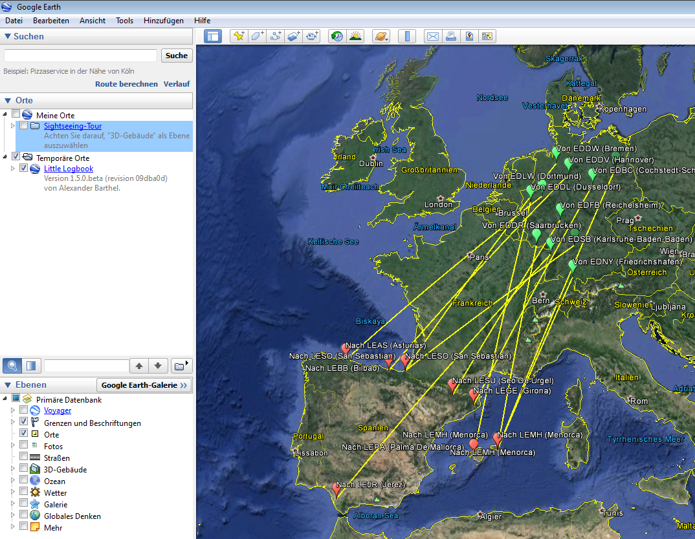

Little Logbook
News
2016-01-20 New version 1.5.0 released. (download LittleLogbook-1.5.0.zip)
2016-01-04 Version 1.0.2 released. (download LittleLogbook-1.0.2.zip)
Links
- Releases and Downloads
- Help English (Version 1.5.0)
- Hilfe Deutsch (Version 1.5.0)
- Github Little Logbook Project and Sources
Screenshots
Main Window with Search and Tooltip on Airport ICAO (Version 1.0.2)

Google Earth KML Export (Version 1.5.0)

Statistics Dock Window (Version 1.0.2)

Last update 2016-09-15